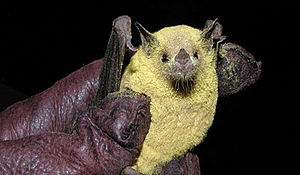
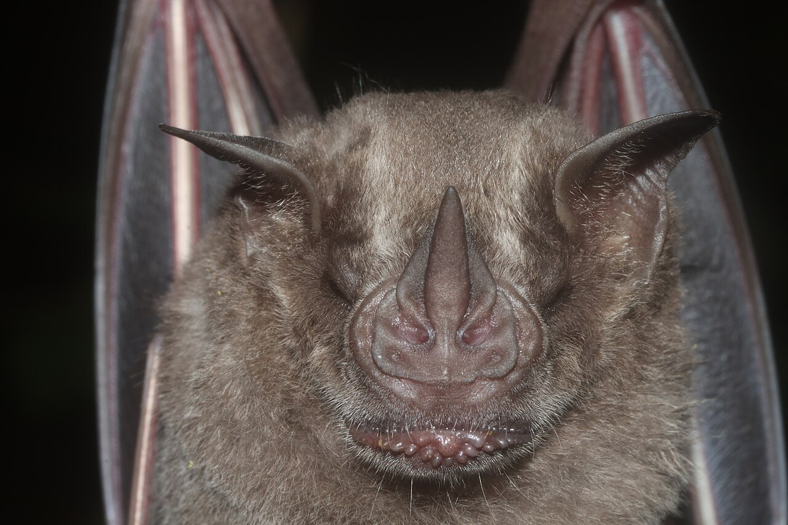

Effiziente Jäger
Fledermäuse sind neben den Flughunden die einzigen fliegenden Säugetiere. Berühmt sind sie für ihre Jagd mit sehr hohen Tönen, dem Ultraschall. Mit diesem können sie selbst in der Dunkelheit Objekte und Beutetiere orten. Für uns ist der Ultraschall ohne spezielle Geräte nicht wahrnehmbar. Zu ihrer Beute gehören hauptsächlich Insekten. Davon fressen sie pro Nacht bis zu einem Drittel ihres Körpergewichts. Das ist so viel, als würde ein Mensch in einer Nacht 600 Bananen essen!
Evolutionäres Wettrüsten
Die Beziehung zwischen der Fledermaus als Jäger und der Motte als Beutetier ist eins der besten Beispiele für ein evolutionäres Wettrüsten. Dabei haben beide Tiergruppen im Verlaufe von Millionen von Jahren immer wieder neue Methoden entwickelt, um ihre Erfolgschancen in dieser Räuber Beute Beziehung zu erhöhen. So haben einige Mottenarten beispielsweise einen Weg gefunden dem Ultraschall der Fledermäuse zu entgehen. Durch die Erzeugung eigener Ultraschallwellen stören die Motten die Ortung der Fledermäuse, also durch die Entwicklung eines eigenen Störsenders!
Fun Facts
Wichtige Bestäuber:Einige Fledermausarten sind wichtige Bestäuber für Pflanzen. In tropischen Regionen bestäuben sie Bäume und Blumen, während sie Nektar trinken.
Lizenziert unter PD.
{kind=link}
Vegetarier:Einige Fledermausarten ernähren sich rein vegetarisch. Dazu gehört auch die Jamaika-Fruchtfledermaus. Diese zerquetscht die Früchte mit ihrem Gesicht, woraufhin der Saft durch spezielle Gesichtsfalten zu ihrem Mund fließt.
Bild von Juan Cruzado Cortés, lizenziert unter CC BY-SA 4.0.
{kind=link}